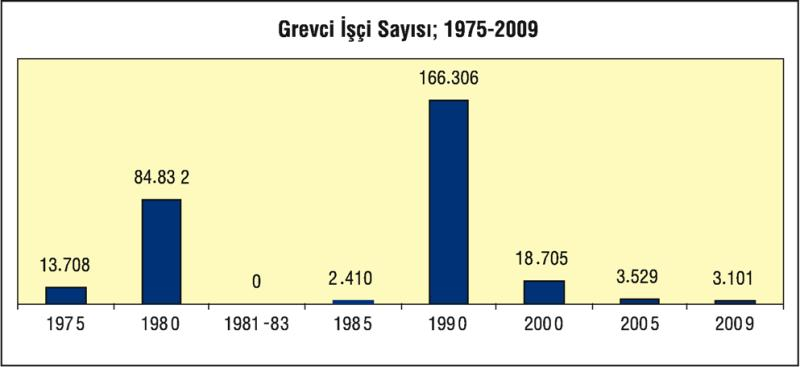
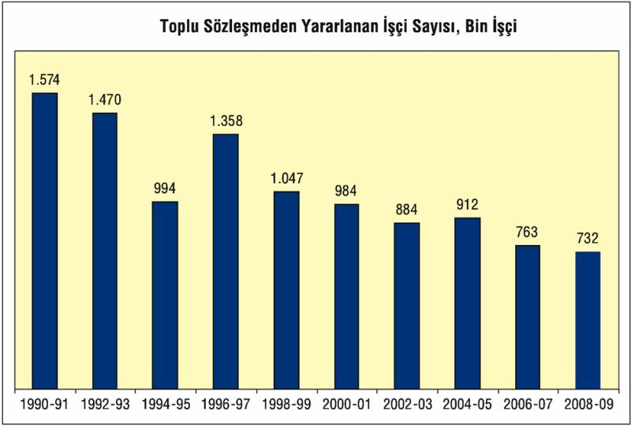

Gelir dağılımının ücretli sınıfın aleyhine gelişmesinde en önemli unsur, sayıları 13,2 milyona ulaşsa da ücretli sınıfın örgütsüzlüğü. Bu sorunda da başrol 12 Eylül askeri diktatörlüğünün.
24 Ocak 1980'de başlayan sürecin en önemli hedeflerinden biri örgütlü işçi sınıfını etkisiz hale getirmek, sendikal hareketi bertaraf etmekti. 1980'de 85 bin işçi grevdeydi. 12 Eylül, grev yasağı getirdi ve 1982 Anayasası sendikal hakları iyice budadı. Örgütlenme zorlaştırıldı, toplu sözleşme hakkı kısıtlandı, grev yapılamaz hale getirildi. 12 Eylül'ün anti-sendikal çalışma çerçevesine rağmen 1990'a doğru yükselen işçi hareketi, o yıl 166 bin işçi grev yaptı. 1995'te yeniden yükselen grevler izleyen yıllarda iyice geri çekildi. 2000'de ancak 19 bine yakın işçi grev hakkını kullanırken 2005'te greve çıkabilen işçi sayısı 3 bin 500 dolayına kadar geriledi. İzleyen yıllarda da bu değişmedi ve 2009 kriz yılında da grevci işçi sayısı 3 bin dolayında kaldı.

| GREVLER: 1990-2009 | |||
| Yıllar | Grev Sayısı |
Grevci İşçi Sayısı |
İşgünü Sayısı |
| 1990 | 458 | 166, 306 | 3, 466, 550 |
| 1991 | 398 | 164, 968 | 3, 809, 354 |
| 1992 | 98 | 62, 189 | 1, 153, 578 |
| 1993 | 49 | 6, 908 | 574, 741 |
| 1994 | 36 | 4, 782 | 242, 589 |
| 1995 | 120 | 199, 867 | 4, 838, 241 |
| 1996 | 38 | 5, 461 | 274, 322 |
| 1997 | 37 | 7, 045 | 181, 913 |
| 1998 | 44 | 11, 482 | 282, 638 |
| 1999 | 34 | 3, 263 | 229, 825 |
| 2000 | 52 | 18, 705 | 368, 475 |
| 2001 | 35 | 9, 911 | 286, 015 |
| 2002 | 27 | 4, 618 | 43, 885 |
| 2003 | 23 | 1, 535 | 144, 772 |
| 2004 | 30 | 3, 557 | 93, 161 |
| 2005 | 34 | 3, 529 | 176, 824 |
| 2006 | 26 | 2, 061 | 165, 666 |
| 2007 | 15 | 2, 592 | 1, 353, 558 |
| 2008 | 15 | 5, 041 | 145, 725 |
| 2009 (*) | 13 | 3, 101 | 203, 406 |
(*) 30.11.2009 tarihi itibariyle
Kaynak: Çalışma ve Sosyal Güvenlik Bakanlığı
Yıldan yıla grev uygulamasının zayıfladığı gözleniyor. 2000 öncesinde, çoğu kamu işyerinde yaşanan grev uygulamaları, bu işyerlerinin süreç içinde özelleştirilmeleri, sendikal mücadeleyi de zayıflattı. Özelleştirilen işyerlerindeki hızlı işçi tasfiyesi, taşeronlaştırma biçimindeki dağıtma ve güvencesizleştirme operasyonları, bu işyerlerindeki sendikal mücadeleyi de, grev mücadelesini de geriletti. 2007'de grevde geçen işgünü sayısının yüksek görünmesi Türk Telekom A. Ş'nin 768 işyerinde uygulanan grevle ilgilidir. O yılın 1 milyon 353 bin görünen grevde geçen işgününün 1 milyon 115 işgünü T. Telekom'a aittir. 2008'de ancak 15 işyerinde 5 bin işçi ile sürdürülen grevler, 2009'un 11 ayında da 13 işyeri ve 3 bin 101 işçi olarak gerçekleşti.
Gerçekte, aidat ödeyen işçi sayısının 1-1,5 milyon dolayında kaldığı günümüz koşullarında, toplu sözleşme hakkını kullanabilen işçi sayısı da hızla azalıyor ve bu da ücretlilerin milli gelirden aldığı payın azalmasında, gelir uçurumunun çalışan sınıf aleyhine olumsuz seyrinde etkili oluyor. Çok değil, 1990 sonrasında toplu sözleşmeden yararlanan işçi sayısına bakıldığında, 1990-2000 dönemi ile 2000-2009 döneminin ayrıştığı ve bu haktan yararlanan, "ayrıcalıklı"ların bile sayısının hızla azaldığı görülebiliyor.
| TOPLU SÖZLEŞME DÜZENİNDE EROZYON | ||||
| Yıllar | Sözleşme Sayısı | İşyeri Sayısı | Bin işçi/Endeks | |
| 1990-91 | 6, 985 | 24, 568 | 1.574 | 100, 0 |
| 1992-93 | 5, 592 | 26, 236 | 1.470 | 93, 4 |
| 1994-95 | 3, 870 | 18, 044 | 994 | 63, 2 |
| 1996-97 | 3, 927 | 23, 256 | 1.358 | 86, 3 |
| 1998-99 | 4, 153 | 19, 420 | 1.047 | 66, 5 |
| 2000-01 | 6, 100 | 21, 055 | 984 | 62, 5 |
| 2002-03 | 3, 380 | 15, 259 | 884 | 56, 2 |
| 2004-05 | 5, 456 | 22, 301 | 912 | 57, 9 |
| 2006-07 | 3, 677 | 15, 190 | 763 | 48, 5 |
| 2008-09 | 3, 557 | 20, 321 | 732 | 46, 5 |

1990-1999 döneminde yılda ortalama 11 bin işyeri için yapılan toplu sözleşmeden 644 bin işçi yararlanırken, bu sayı izleyen 10 yılda, yani 2000'li yıllarda, yılda ortalama 9 bin 415 işyerine ve 428 bin işçiye düşmüş görünüyor. Dolayısıyla iki 10 yıl arasında toplu sözleşmeden yararlananların sayısının üçte bir oranında gerilediği görülüyor ki, bu dramatik bir düşüştür.
Genellikle 2 yıl için yapılan toplu sözleşmelerin, daha çok tek sayılı yıllarda bağıtlandığı anlaşılıyor. Böyle bakınca, 1991'de 1 milyon 90 bin işçi için toplu sözleşme yapılırken, bu sayının 1995'te 766 bine düştüğü, 1999'da ise 828 bine çıktığı, 1990-1999 dönemi ortalaması olarak da yıllık 644 bini bulduğu görülüyor.
Ancak, 2001 krizi ve arkasından gelen AKP iktidarındaki neoliberal uygulamaların, özelleştirmelerin hızlandırıldığı, anti-sendikal saldırıların arttığı 2000'li yıllarda toplu sözleşme hakkını kullanmada da önemli gerilemelerin yaşandığı görüldü. 2001'de 775 bin olan TİS kapsamındaki işçi sayısı 2003'te 614 bine, 2005'te 587 bine düştükten sonra 2007 ve 2009'da 460 binlere gerilemiş bulunuyor. 2000'li yılların ortalaması için TİS'ten yararlanan işçi sayısının 430 binlere düşmesi gerçekten dramatik bir gerileme. Bu kadar geriletilen toplu sözleşmeli alanın da önemli bir kesimi kamu sektörüne ait ve AKP iktidarı, bu kadarına bile tahammülsüz ve neoliberal icraatları ile bu alanı daha da daraltma çabası içinde.